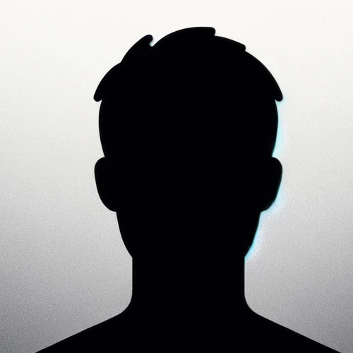

Choose a picture that is in square aspect ratio. We recommend 500x500px. The photo will not leave your browser. All processing is done on your machine.

Looking to stand out on LinkedIn with a custom badge? This privacy focused open source app does exactly that. Read more...
Choose a picture that is in square aspect ratio. We recommend 500x500px. The photo will not leave your browser. All processing is done on your machine.